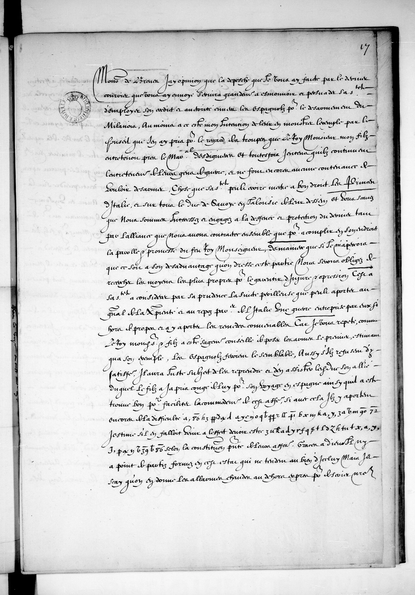

Første artikkel · Diplomatisk korrespondanse
Maria av Medici: det to brev til Roma skjuler
Høsten 1610 bryter chiffrerte passasjer inn i den franske teksten i to brev til Savary de Brèves. En tabell funnet i BnF gjør det mulig å foreslå det som, så vidt vi vet, er en første dechiffrering. Den avdekker politiske vurderinger; enkelte tegn er fortsatt sannsynlige, men ikke bekreftet.
Sammendrag: Hvor langt er dechiffreringen kommet?
Begge passasjene har nå en sammenhengende lesning, styrket av gjennomlesningene og av tilbakemeldingen fra Satoshi Tomokiyo. Han bekrefter at vårt bilde av Français 3462 er bildet av nøkkelen Henrik 4.–Brèves som han kjente; signaturen «3642» var en trykkfeil. Han bekrefter også 72~→QUE, 79~→RE, 86~→SE og 90~→TION.[7]
Den overordnede meningen virker svært sannsynlig. Så vidt vi vet, er dette en første dechiffrering av disse passasjene; enkelte tegn er fortsatt sannsynlige, men ikke bekreftet. Forbeholdene gjelder særlig B-ene i «ambition» og «foiblesse» og endelsen i «acompagnez». Lesningen av tallene er styrket. Anvendt på Marias brev forklarer Henrik 4.s tabell det meste: Regenten brukte etter vårt syn en svært lik nøkkel, og noen varianter i den kan forklare de tegnene som fortsatt er usikre.
Oktober 2026: bekreftelse. Satoshi Tomokiyo fører nå Maria av Medicis chiffer som løst i sin liste over uløste chiffertekster, med henvisning til vår lesning av 17. oktober.[9] George Lasry, som i 2021 dechiffrerte Henrik 4.s brev sammen med Norbert Biermann og Satoshi Tomokiyo, har på sin side lest passasjen av 10. november på nytt; rapporten hans, publisert av Satoshi Tomokiyo 21. oktober 2026, krediterer vår lesning.[9] Han bekrefter tegnene vi lot stå som usikre i «recognoissant» og «sentant», leser tegn 4 som «Sa Sainteté» (Hans Hellighet), verdien i Henrik 4.s nøkkel, der vi hadde valgt «le pape» (paven), og føyer til nøkkelen et tegn for N formet som en «e». Vi slutter oss til disse lesningene, og til hans lesning av klarteksten som følger («ne les pressera»). Passasjen av 15. september dekkes ikke av denne rapporten. Daniel Bourdeau fører nå også begge passasjene som lest i katalogen sin og tilskriver dechiffreringen, med nøkkelen i Français 3462, vår lesning.[10] Se de punktene som fortsatt er åpne.
1610: et formynderstyre og skjøre allianser
Henrik 4. blir myrdet 14. mai 1610. Ludvig 13. etterfølger ham som barn; moren hans, Maria av Medici, blir regent. Brevene som studeres her, er altså skrevet noen måneder etter et brått regjeringsskifte, ikke i den rolige kontinuiteten i en etablert regjeringstid. Denne kronologien er fastslått uavhengig av dechiffreringen.[4]
Våren 1610 bringer avtalene i Bruzolo Henrik 4. og Karl Emanuel 1. nærmere hverandre mot Spania. Kongens død setter planen i fare; formynderstyret nærmer seg Madrid og lar Savoia stå utsatt tilbake. Denne bakgrunnen kommer fra historisk forskning, ikke fra dechiffreringen.[5]
Roma er et annet forhandlingssted. Der representerer Brèves det franske monarkiet: Et brev fra regenten gir ham både et politisk standpunkt og en vurdering av hva det er mulig å oppnå. I novemberbrevet taler klartekstordene allerede om nedrustning og om faren for et avslag. Den chiffrerte passasjen skulle presisere vurderingen av aktørene. Forskyvningen er viktig: Det overordnede emnet var synlig; det diplomatiske forbeholdet forble skjult.
| Holdepunkt | Det som er fastslått |
|---|---|
| Våren 1610 | Fransk-savoyisk tilnærming i Bruzolo, før Henrik 4.s død [5]. |
| 14. mai 1610 | Henrik 4. myrdes; Ludvig 13. etterfølger ham, Maria av Medici blir regent [4]. |
| 15. september 1610 | Første brev som studeres, i manuskriptet Français 3789 [1]. |
| 10. november 1610 | Andre brev som studeres, i samme manuskript [2]. |
Beskrivelsen av manuskriptet registrerer Marias to stykker, nr. 11 og 12, i en samling som også omfatter brev fra Henrik 4., Ludvig 13., Brulart og hertugen av Savoia. Dette dokumentariske naboskapet er nyttig for å finne korrespondentene; det beviser ikke at alle stykkene bruker samme nøkkel.[6]
To brev, et diplomatisk anliggende
De to stykkene oppbevares i manuskriptet Français 3789 i Bibliothèque nationale de France. De er sendt av Maria av Medici, den gang regent, til François Savary de Brèves, ambassadør i Roma. Det første er datert 15. september 1610, det andre 10. november; passasjene som studeres, står på folio 17r og 19r.[1][2]
Chifferet dekker ikke hele brevet. Det er satt inn i franske setninger som allerede kan leses. Dette naboskapet er verdifullt: Det gjør det mulig å lete etter en grammatisk overgang og en mening. Det krever også disiplin: En forlokkende overgang gjør ikke et tvetydig tegn til en sikker bokstav.
Artikkelen plasserer disse brevvekslingene i de savoyiske sakene: reisen til Spania for sønnen til hertugen av Savoia i septemberbrevet, og drøftingene om nedrustning i novemberbrevet. Den foreslåtte lesningen må vurderes innenfor denne dokumentariske rammen, uten at den alene skal fortelle hele historien om fransk politikk i Italia.

15. september: ondsinnethet, ærgjerrighet og svakhet
Lesningsforslaget for de to chiffrerte segmentene beholder den rettskrivningen som er oppnådd. Ordene med prikket understrekning avhenger blant annet av valg av glyfer som må kontrolleres; elementene i blått er tallverdiene som Satoshi har bekreftet.
ce sera trop manifester leurs malice et am[b?]ition que
acompagne[z?] d’imprudence et [de?] foi[b?]lesse
Passasjen skulle da henge sammen med klartekstordene slik: «[…] si avec cela ilz y apportent encore de la difficulté, ce sera trop manifester leurs malice et am[b?]ition que j’estime, s’il en falloit venir à l’effet, devoir estre acompagne[z?] d’imprudence et [de?] foi[b?]lesse, selon la constitution présente de leurs affaires.»
Modernisert lesning, redaksjonell. […] hvis de i tillegg skaper vanskeligheter, vil det i for høy grad vise deres ondsinnethet og ærgjerrighet, som jeg mener, dersom det skulle komme til handling, måtte bli ledsaget av uforsiktighet og svakhet, slik deres saker står nå.
Moderniseringen gjenoppretter samsvarsbøyning og legger til tegnsetting; den gjengir ikke manuskriptet bokstav for bokstav. Ordet «ambition» avhenger særlig av lesningen av den overstrøkne b-en, av den lille m-en som nå er valgt som I, og av suffikset 90~ → tion. Disse avhengighetene er fortsatt synlige i sammenstillingen.
10. november: paven og nedrustningen
Det andre brevet skulle inneholde følgende passasje:
que Sa Sainteté recognoissant leurs arogance et sentant sa timidite
Overgangen som er beholdt i artikkelen, er: «Aussi vois-je bien que Sa Sainteté recognoissant leurs arogance et sentant sa timidite ne les pressera jusques à l’extrémité du désarmement, pour recevoir enfin la honte d’un refus absolu […]».
Det skulle være mindre en kunngjøring av en beslutning enn en vurdering av et maktforhold: Paven, som er seg bevisst sin egen forsagthet, vil ikke kreve full nedrustning av spanjolene, noe som ville gi ham et ydmykende avslag. «Recognoissant» og «sentant», lenge de mest skjøre ordene, er bekreftet av George Lasrys uavhengige lesning, som også leser tegn 4 som «Sa Sainteté».[9]
Undersøk brevet av 10. november →
Hva den siste gjennomlesningen tilfører
Brices sammenligninger har gjort det mulig å skille homofonene fra hverandre, beholde ligaturen U3 og styrke flere sekvenser, særlig «d’imprudence» og «timidite». Den positive vurderingen fra den samlede gjennomlesningen gjør ikke de tidligere «mulig» eller «uavgjørbar» til sikre valg for hvert tegn.
Tilbakemeldingen fra Satoshi gir ekstra støtte til de fire tallverdiene, som tidligere var utledet av sammenhengen. Den gjelder seks forekomster. Prefikset 79~ → re avhenger dermed ikke lenger bare av vårt valg av ordet «recognoissant»; C/B og de to S-ene i dette ordet må fortsatt undersøkes. Satoshi gir 41 → leur, mens gjennomlesningen hadde valgt «leurs»: Denne forskjellen i endelsen er fortsatt synlig.
Tegnene i hakeparentes er fortsatt forslag. Blått markerer verdiene Satoshi har bekreftet, og anvendelsen av dem på Marias nøkkel er fortsatt et forslag. Denne fremstillingen beholder en sammenhengende lesning uten å viske ut de lokale forbeholdene. Forstå de tre kontrollnivåene.
Nøkkelen som ble funnet: et dokument i BnF
Det materielle støttepunktet er bilde 112 i manuskriptet Français 3462, digitalisert på Gallica under identifikatoren btv1b9058227h. I den delvise PDF-en Brice sendte, er det side 26. Bildenummeret og sidenummeret i filen kan altså ikke byttes om. Høyoppløsningsbildet Brice skaffet, gjør det mulig å undersøke de små homofonene som var vanskelige å skille i den første PDF-en.[3]

Dette er ikke et enkelt substitusjonsalfabet. En klartekstbokstav kan ha flere chiffertegn: Det er homofoner. Tabellen gir også former for stavelser eller ord, og nomenklaturoppslag. Den samme meldingen blander altså flere nivåer. Ett tegn kan gi en bokstav, et annet en gruppe som «ce» eller «en», et tall et uttrykk som «le pape».
De foreslåtte sammenstillingene omfatter a, → ce, x, → en, y, → et og 4 → Sa Sainteté. De forklarer hvorfor et komma ikke er nok til å skille ord. De grafiske formene er avgjørende: «d»-en i en summarisk transkripsjon kan dekke over forskjellige tegn. Metode viser hvordan disse forskjellene blir bevart.
Satoshi bekrefter bildet av denne tabellen for Henrik 4.–Brèves. Den nøyaktige anvendelsen på Marias brev må fortsatt kontrolleres. Fire verdier som nå er bekreftet →.
Tabellen var allerede kjent fra arbeidet med Henrik 4.s brev til Brèves, dechiffrert i 2021 av George Lasry med hjelp fra Norbert Biermann og Satoshi Tomokiyo. Vår undersøkelse fant den riktige signaturen og anvendte tabellen på Marias to brev: Den forklarer det meste av dem, noe som tyder på en svært lik nøkkel med noen varianter. Det nye vi gjør krav på, så vidt vi vet, gjelder disse passasjene hos Maria.[7]
Hvordan arbeidet gikk fremover
13.–14. oktober: finne det riktige dokumentet, deretter de riktige tegnene
Undersøkelsen begynner med to korte passasjer som er omtalt i tidligere arbeider. Et spor fører til et lengre brev fra Henrik 4. til Brèves, der en nøkkel kunne tenkes å passe. En første serie bilder viser ikke det ventede brevet: Man må skille mellom det katalogiserte dokumentet, folioene og bildene man har fått, uten å ta et nummer som ligner, for en identifikasjon.
De første transkripsjonene skiller mellom enkle bokstaver, overstrøkne tegn, doble former, kodeord med komma og tall. Brices gjennomlesninger flytter flere grenser og skiller former som den første lesningen hadde slått sammen. Letingen etter nøkkelen kan ikke veie opp for en transkripsjon som visker ut slike forskjeller.
15. oktober: nøkkelsamlingen, deretter høy oppløsning
Det første bibliografiske sporet nevnte «Français 3642». Undersøkelsen vender seg mot Français 3462, en samling chiffertabeller. PDF-en Brice skaffet, gjør det mulig å finne flere beslektede tabeller; side 26 viser de sammenstillingene man lette etter. Deretter kommer høyoppløsningsbilde 112. Satoshi bekrefter nå at bildet er det riktige, og at «3642» var en trykkfeil; denne identifikasjonen beviser ikke i seg selv at nøkkelen passer nøyaktig på Maria.
Den første avskriften av tabellen gir likevel ikke en sammenhengende fransk tekst. Forvekslingene mellom homofoner, overstrøkne tegn og nærliggende former er fortsatt for mange. Automatiske forsøk og sannsynlige ord får fram fragmenter; den beste poengsummen deres er ikke noe bevis. Særlig risikerer man, ved å velge en ny bokstav ved hver tvetydig forekomst, å skape en sammenheng som manuskriptet ikke garanterer.
16. oktober: gjøre hver beslutning etterprøvbar
Omarbeidingen C10 går tilbake til en manuell sammenstilling uten språkmodell. Den skiller homofonene ved hjelp av visuelle identifikatorer, dokumenterer sammenslåingen tu og fjerner tilbakefallet fra tall med strek over til enkle tall. Dette trinnet er supplert med Brices gjennomlesninger og med sammenligningen av verdiene med tilbakemeldingen fra Satoshi. Resultatet er en foreslått sammenhengende lesning, ikke en utsletting av de tidligere vanskelighetene.
Se oversikten over spor og forsøk →
17. oktober: holde verdiene opp mot tilbakemeldingen fra Satoshi
Den 17. oktober bekrefter tilbakemeldingen fra Satoshi bildet og fire tallverdier. Den sammenhengende lesningen er konsolidert; de tegnvalgene som fortsatt er åpne, forblir synlige.
Hva som er endret i lesningen
Gjennombruddet kommer ikke fra en ny løser som produserer en fransk tekst. Omarbeidingen C10 bygger opp en manuell sammenstilling, uten språkmodell. Den skiller tegn som de tidligere transkripsjonene for raskt hadde slått sammen, og retter en feil i programmet som visket ut strekene over tallene.
Ett eksempel er avgjørende: De to gamle segmentene t og u på en linje slås sammen til én glyf, U3. Rekken D–I–M–P–R–U–D–EN–CE blir «d’imprudence». En annen distinksjon: Et tall med strek over har ikke automatisk samme verdi som det samme tallet uten strek. De gamle resultatene «Concini» og «avec» for enkelte forekomster kunne derfor ikke lenger beholdes som sikre lesninger.
Metode redegjør for de andre endringene, de fire verdiene som nå er bekreftet, og hva kontrollene faktisk fastslår.
Hva denne lesningen tilfører historien
I september gjør de foreslåtte ordene «malice», «ambition», «imprudence» og «foiblesse» (ondsinnethet, ærgjerrighet, uforsiktighet, svakhet) en streng vurdering av de savoyiske motpartenes krav og midler eksplisitt. I sammenhengen med klartekstdelene dreier det seg ikke bare om å formidle et standpunkt: Formynderstyret vurderer vanskelighetene de skaper, og faren ved å gå fra hensikter til handling.
I november legger lesningen vekt på grensene for diplomatisk press. I forhandlingene om nedrustning vil ikke paven presse spanjolene til et krav som er dømt til å bli avvist, og som ville utsette ham for en ydmykelse. Den foreslåtte passasjen utfyller dermed klartekstordene om nedrustningen og det absolutte avslaget. Disse ordene er nå bekreftet av George Lasrys uavhengige lesning.
Disse to brevene gir altså tilgang til formynderstyrets vurderinger, formulert for ambassadøren i Roma. Lesningen forklarer de fem linjene sammenhengende; kontrollen tegn for tegn må fortsatt rydde av veien de siste forbeholdene. Den historiske sammenhengen er en støtte for tolkningen, ikke et selvstendig bevis for chifferet.